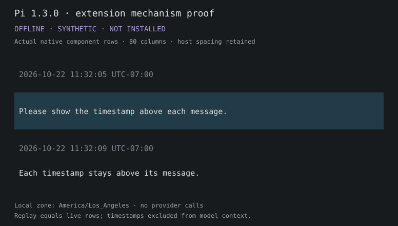
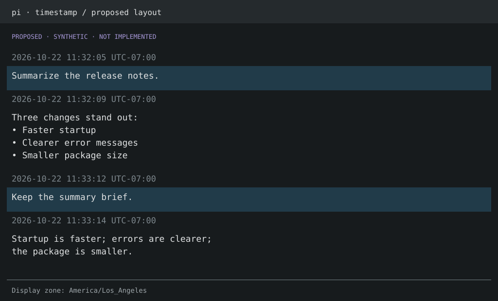

已接受的布局与实现记录。真实 regular TUI 的流式、reload、磁盘恢复和配置重绘验证通过。验证与覆盖边界；本文件保留为研究与设计记录，不重新开启评审。
已确认：完整日期 + 秒 + UTC 偏移；默认主机本地时区，支持指定时区。此前“原生 header / 旧历史”A/B 问题来自额外假设，现已撤回。本页面保留为设计预览。
实际组件输出
下图由隔离扩展演示中 Pi 原生组件的 ANSI 行转换为 SVG。保留真实组件间距；不是完整终端截图。

真实 extension loader/runner + 内存 SessionManager + 原生 transcript 方法；footer、终端刷新等服务使用替身。没有 provider 请求、活动安装或 Pi 修改。
拟议布局与其他格式
以下仍是 proposed 设计图。按钮仅切换预览。

设计状态
上方时间行的 extension-only 机制已验证。默认格式、默认时区和可配置时区已确认，不再重复询问，也没有旧历史回填路线题。该布局已被接受，实现已经过隔离验证。安装说明见 README。
| 行为 | 结果 |
|---|
| user / assistant 上方显示 | 隔离原生组件演示通过。 |
| 流式 / 重放 / 模型上下文 | 两条时间行不重复，实时与重放逐行相同，模型上下文不变。 |
| 显示格式 / 时区 | 默认 YYYY-MM-DD HH:mm:ss UTC±HH:mm；主机本地，支持 IANA 与 DST。其他格式建议用 preset。 |
| 后续验证 | regular TUI 的 streaming/reload/disk resume 与配置重绘已通过；fullscreen、分支压缩与空/纯工具等未测范围见 validation.md。 |
范围是 user/assistant 消息；不为 toolResult、系统通知或摘要另加时间。时间沿用 message.timestamp，不当成回复完成时间。